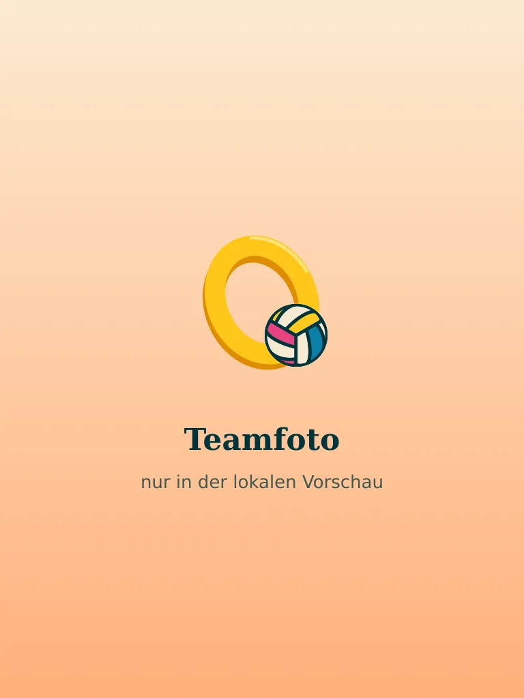

Baukasten · Stand Runde 16 · 03.11.2026
Alles nach dem Hero, aus einem Guss.
Hier steht, woraus jede weitere Seite gebaut wird: Gliederung, Logo, Farben, Schrift, Knöpfe und Bewegung. Weiter unten steht das erste Kapitel der Startseite im Stil des Heros: echte Kulisse, 3D-Schrift, Licht, Ball und Möwe. Der Maßstab für jede Seite: verspielt, aber so hochwertig, dass man die Mühe dahinter sieht, am Rechner wie am Handy.
Gliederung und Farben
Die Treppe hinunter zum Pool.
Sieben Kapitel statt zwölf Abschnitten. Kein Text geht verloren, er wird nur zusammengelegt. Jedes Kapitel ist eine Stufe der Terrasse aus dem Hero, mit eigener Wandfarbe aus dem Gesamtentwurf. Der Ball hüpft von Stufe zu Stufe.
- 1
Hero
Terrasse, Ring, Ball, Möwe. Steht.
Ball: fliegt durch den Ring ins nächste Kapitel.
Terrakotta #e4572e - 2
Der Job auf einen Blick
Alle Fakten zuerst, dazu kurz „Über uns“. Am wichtigsten für Google und KI-Suchen.
Ball: fällt auf die Treppe und hüpft die Stufen hinunter. Die Möwe wartet auf dem Kübel.
Vanille #fcead1 - 3
Dein Sommer auf Mallorca
„Was für dich drin ist“ und „Ein typischer Tag“ in einem: Die Vorteile hängen an den Uhrzeiten.
Ball: hüpft die Uhrzeiten hinunter wie Stufen.
Orange #ff741f - 4
Dein Team
„Wer wir sind“, die Galerie, später Stimmen aus dem Team. Am Ende: „Lust auf die Saison 2027?“
Ball: plumpst in den Pool und spritzt.
Lagune #1ec8d0 - 5
Passt das? So läuft's
Was du mitbringst, Kurz-Check, Bewerbung in vier Schritten.
Ball: hakt den Kurz-Check ab.
Creme #fff4df - 6
Gut zu wissen und Fragen
„Für dich und alle, die sich Sorgen machen“ als erste Gruppe, danach die häufigen Fragen.
Ball: ist der Knopf zum Aufklappen.
Creme #fff4df - 7
Dein Sommer beginnt hier
Kontakt, WhatsApp, Formular, am Rechner der QR-Code.
Ball: landet im Ring und trifft den Aufkleber.
Zitrone #ffe600 - ·
Fußzeile
Logo, Rechtliches, dein Credit.
Petrol #00343a
Das Menü bleibt: Der Job → 2 · Vorteile → 3 · Ablauf → 5 · FAQ → 6 · Kontakt → 7. „Partner-Vorteile“ ist eine eigene Seite.
Logo
Ring und Ball.
Richtung B, ausgearbeitet: der Ring aus dem Hero, davor der Ball, daneben der Name in Shrikhand. Alles als saubere Vektor-Datei, die Schrift in Formen umgewandelt.
Ganz klein, im Browser-Tab, lässt das Zeichen die Nähte des Balls weg und macht den Ring dicker. Sonst würde der Ball zum Klecks.
Schrift
Zwei Schriften. Mehr nicht.
Dein Sommerjob.
Kein Zimmer-Drama
Der Job
Bevor du dich bewirbst, sollst du genau wissen, worauf du dich einlässt.
Mitten in der Hochsaison allein ein Zimmer auf Mallorca suchen? Das ist ein Hobby für Leute mit zu viel Zeit. Wir helfen dir, eine gute und günstige Unterkunft in der Nähe zu finden, meistens zusammen mit anderen aus dem Team.
Shrikhand trägt alles, was laut oder mittel spricht: Titel mit voller Tiefe, Zwischentitel, Kernsatz, Menü und Hauptwege mit einer feinen Kante. Nunito trägt alles Leise: Lesetext, Dachzeilen, Hinweise und Nebenwege, mit runden Enden wie Shrikhand, Ball und Ring. Größen wachsen fließend mit dem Bildschirm, am Handy bleibt der Fließtext bei 17 px.
Knöpfe und Links
Ein Aufkleber. Der Rest sind Wörter.
Den Bewerben-Aufkleber gibt es nur einmal. Er wandert mit: am Rechner oben rechts, am Handy unten rechts im Daumenbereich. Nur im Schlusskapitel landet er groß in der Szene. In den Kapiteln führt ein Wort-Link zu WhatsApp.

Links im Text bleiben schlicht unterstrichen, damit man sie sicher erkennt, zum Beispiel alle Partner-Vorteile ansehen.


Der Job
Der Job auf einen Blick
- Was
- Event-Promoter
- Wo
- Playa de Palma
- Wann
- Saison 2027
Bevor du dich bewirbst, sollst du genau wissen, worauf du dich einlässt. Hier steht alles Wichtige, ohne Werbeschnack und ohne Hochglanz-Gelaber.
 Was du machst
Was du machst- Du sprichst Urlauber an der Playa de Palma an, stellst ihnen Events, Partys und Locations unserer Partner vor und verkaufst Tickets oder bringst Gäste direkt hin. Je nach Einsatz hilfst du auch beim Einlass oder an Events mit. ⚠️ Aufgaben mit Kunde bestätigen
 Wo
Wo- Playa de Palma und El Arenal auf Mallorca, rund um die bekannten Hotspots und Balnearios.
 Wann
Wann- Die Saison läuft von März bis Oktober. Du kannst die ganze Saison bleiben oder für einen Teil davon kommen. ⚠️ Zeitraum und Mindestdauer mit Kunde bestätigen
 Arbeitszeiten
Arbeitszeiten- Vor allem abends und nachts, wenn an der Playa am meisten los ist. Tagsüber hast du meistens frei. Das ist der Teil, bei dem deine Freunde zu Hause still werden. ⚠️ Mit Kunde bestätigen
 Verdienst
Verdienst- Du arbeitest auf Provisionsbasis. Wie viel du verdienst, hängt davon ab, wie viele Gäste du gewinnst. An starken Tagen sind bis zu 300 € drin. ⚠️ Zahl mit Kunde bestätigen
 Vertrag
Vertrag- Du arbeitest als Freelancer (selbstständig). Eine eigene Krankenversicherung, die auf Mallorca gilt, brauchst du selbst. Wir sagen dir vorher, worauf du achten musst. ⚠️ Mit Kunde bestätigen
 Unterkunft
Unterkunft- Wir helfen dir, eine gute und günstige Unterkunft in der Nähe zu finden, meistens zusammen mit anderen aus dem Team.
 Voraussetzungen
Voraussetzungen- Mindestens 18 Jahre, gutes Deutsch, Spaß am Umgang mit Menschen. Vorerfahrung brauchst du nicht.


Bausteine
Fotos, Schritte, Fragen.
Fotos: ein Stapel Sofortbilder
Am Rechner mit der Maus darüberfahren, am Handy wischen.





Schritte: die Bewerbung als Treppe
Kurz melden
Schick uns eine WhatsApp oder füll das Formular aus. Name, Alter, Zeitraum, ein paar Sätze über dich und ein Foto reichen. Einen Lebenslauf brauchst du nicht, dein Schulpraktikum darf also zu Hause bleiben.
Kennenlernen
Wir melden uns in der Regel innerhalb von [PLATZHALTER: X] Tagen und machen ein kurzes Gespräch per Telefon oder Video aus. Da kannst du alle Fragen stellen, auch die, die dir peinlich vorkommen. Genau für die ist das Gespräch da.
Zusage und Plan
Passt es für beide Seiten, legen wir deinen Starttermin fest. Wir helfen dir bei der Unterkunft und sagen dir, was du vorher organisieren musst, zum Beispiel deine Krankenversicherung. Nicht der spannendste Teil, aber der mit dem besten Gefühl danach.
Ab auf die Insel
Du fliegst nach Mallorca, wir zeigen dir alles und arbeiten dich ein. Ab dann bist du Teil des Teams, und zu Hause wird dein Handy langsam neidisch. ⚠️ Abholung/Einarbeitung mit Kunde bestätigen
Fragen: der Ball ist der Knopf
Was macht ein Promoter auf Mallorca genau?
Ein Promoter bei MyMallorcaSummer spricht Urlauber an der Playa de Palma an und stellt ihnen Events, Partys und Locations unserer Partner vor. Du verkaufst Tickets oder bringst Gäste direkt hin und hilfst teilweise beim Einlass. Gearbeitet wird vor allem abends und nachts. Kurz gesagt: Du bist der Grund, warum Urlauber den besten Abend ihrer Woche finden.
Brauche ich Erfahrung oder einen Lebenslauf?
Nein. Du brauchst weder Vorerfahrung noch einen Lebenslauf. Wichtig sind Motivation, Zuverlässigkeit und Spaß am Umgang mit Menschen. Alles andere lernst du bei der Einarbeitung. Dein Lebenslauf darf also zu Hause bleiben.
Wie alt muss ich sein?
Du musst mindestens 18 Jahre alt sein. Die meisten in unserem Team sind zwischen 18 und 30.
Bewegung
Lebendig, aber lesbar.
- Einmal hereinkommen. Titel hüpfen Wort für Wort an ihren Platz, Text gleitet nach, Fotos landen schräg, die Gegenstände der Fakten hüpfen nacheinander an ihre Stelle. Einmal pro Besuch, nicht bei jedem Scrollen.
- Jedes Kapitel ist eine Stufe der Terrasse. Dieselbe gerenderte Welt wie im Hero, geschärft wie die Hero-Szene. Wo noch keine Kulisse steht, wiegt ein Palmenschatten auf der Wand.
- Licht wie im Hero. Von oben rechts fallen weiche Sonnenstrahlen, die sich kaum merklich drehen. Hinter dem Inhalt wandert ein zweiter Palmenschatten, gegenläufig zum ersten. Hinter jedem Gegenstand liegt ein warmer Sonnenfleck. Das Licht blendet oben weich ein, damit zwischen zwei Kapiteln keine Naht entsteht.
- Die Szene lebt. Palmwedel und Pflanzen sind freigestellt und wiegen sich im Wind, fest am Bildrand und in der Erde (
tools/site/blaetter.cjs, WebGL). Ohne WebGL steht das ruhige Bild. - Gegenstände zum Anfassen. 3D wie Ball und Ring, groß genug zum Hinschauen (am Rechner bis 128 px). Sie schweben leicht vor der Wand und werfen dort einen Schatten, der kleiner wird, wenn sie steigen. Beim Scrollen gleiten sie etwas langsamer als die Seite, mit der Maus rücken sie ein wenig mit. Beim Überfahren oder Antippen spielen sie eine eigene kleine Szene, weich und ohne Ruck: Das Ticket wird angeschnippt, die Sonne dreht eine Runde, die Discokugel pendelt. Am Rechner hängen die Fakten versetzt, wie von Hand an die Wand gehängt.
- Lautstärke der Schrift. Die 3D-Tiefe ist ein Regler, kein Schalter, wie auf einem Reiseplakat: Das große Wort strahlt, die kleine Zeile darunter ist schlicht. Laut mit voller Tiefe sprechen nur Hero-Schriftzug und Kapiteltitel. Mittel mit einer feinen Kante sprechen Fakt-Titel, Kernsatz, Menü und Hauptwege: über dem Bild Creme mit Sandkante und dunklem Schein, auf heller Wand weiches Petrol oder Terrakotta. Leise in Nunito ohne Kante steht alles Funktionale: Nebenwege wie „Lieber per Formular“, Hinweise und Dachzeilen. „Jetzt per WhatsApp bewerben“ steht auf hellen Wänden im Original-WhatsApp-Grün (#25D366) mit dunkelgrüner Kante und feiner dunkelgrüner Kontur (
--wa-kontur). Ohne Kontur fehlt dem hellen Grün auf heller Wand der Rand, die Buchstaben verschmelzen, und in „Jetzt“ liest sich das z wie ein x. Der Aufkleber bleibt pink. - Die weiche Klappe. Menü und Wege klappen beim Überfahren Buchstabe für Buchstabe in ihre zweite Farbe, als Welle von der Seite, von der die Maus kommt. Jeder Buchstabe kippt nur bis 75 Grad und blendet dabei über: Nie steht ein Buchstabe hochkant als Strich unter dem Wort, die zweite Farbe ist erst da, wenn sie hereinkippt, und das Wort bleibt durchgehend lesbar. Keine Unterstreichung, keine Striche.
- Titel, Kernsatz, Details. Jedes Kapitel sagt das Wichtigste zuerst: Unter dem Titel steht der Kernsatz in drei Wörtern (Etikett leise, Wert mittel, je mit Leuchtmarker), danach die Einleitung, dann die Einzelheiten. Der Hero bleibt frei von Textzeilen: Dort spricht das Bild (Ike, 02.11.2026).
- Ein Leuchtmarker je Fakt. Der Kernbegriff bekommt einen Strich in Sonnengelb, der sich zieht, wenn der Fakt ins Bild kommt. Nur einer pro Fakt, sonst verliert er seine Wirkung.
- Der Ball ist ein echter Ball. Er stößt an Flächen, Kanten und Ecken des Szenenbildes (
data-boden, ein Eintrag mit vier Werten ist schräg), rollt mit Drall, staucht beim Aufprall und kommt nur auf flachem Boden zur Ruhe. Auf einer Kante oder dem Kübel bleibt er nie liegen. Antippen schießt ihn in einem Bogen gegen die Titelbuchstaben, die federnd hochspringen. Unter der Maus heben sich Titelbuchstaben als Welle und sinken federnd zurück, hoch und runter, nie wie eine Taste nach hinten. - Die Möwe ist ein Charakter. Sie fliegt wie eine Möwe: kurz in die Knie, steigen mit schnellem Schlag, gleiten mit ausgebreiteten Flügeln, vor der Landung aufrichten und bremsen. Trifft sie der Ball hart, fliegt sie wie aus der Kanone, überschlägt sich, fängt sich, schüttelt sich und schaut frech zurück. Sie setzt sich nie auf Text. Was sie trägt, hält sie sichtbar im Schnabel: Buchstabe für Buchstabe vom Boden gelöst, dann als Banner hinter ihr her, warm leuchtend, damit es sich vom Schriftzug abhebt. Wer Platz machen muss, hüpft flach, nie quer über einen Titel. Schießt der Ball auf sie, holt er erst Anlauf und schießt flach, damit man den Schuss sieht.
- Ein Aufkleber, der Platz macht. Den Bewerben-Aufkleber gibt es nur einmal. Liegt Text unter ihm, wird er zur kleinen WhatsApp-Sonne in seiner Ecke und kommt groß zurück, sobald darunter wieder Szene ist. Am Handy auf der Startseite springt er nach der Landung kleiner nach oben rechts in den Kopf, neben „Menü“: Beim Runterlesen geht er mit dem Kopf weg, beim Hochscrollen kommt er mit ihm zurück, so liegt er nie über Fließtext. Solange unten im Kapitel „Jetzt per WhatsApp bewerben“ zu sehen ist, tritt er ab, zwei WhatsApp-Knöpfe wären doppelt. Er ist ein Ziel für den Ball: Treffer zählen im Flug und in der Hand, ein knapper Wurf wird sanft zu ihm gelenkt, und vor jedem Wurf wird seine Lage frisch gemessen.
- Übergänge wie Kamerafahrten. Vom Hero ins erste Kapitel öffnet sich der Ring wie eine Blende mit hellem Rand, die Terrasse setzt sich, die Möwe sitzt auf der Mauerkante und fliegt mit ins Kapitel.
- Am Handy dasselbe Niveau. Jede Tippfläche mindestens 44 px, keine Schrift unter 14 px, nichts ragt über den Rand, das Menü läuft quer in zwei Spalten. Geprüft mit
tools/seiten-test/handy-rundgang.mjs. - Weniger Bewegung heißt Stillstand. Wer das am Gerät eingestellt hat, sieht alles sofort und vollständig. Ohne JavaScript genauso.